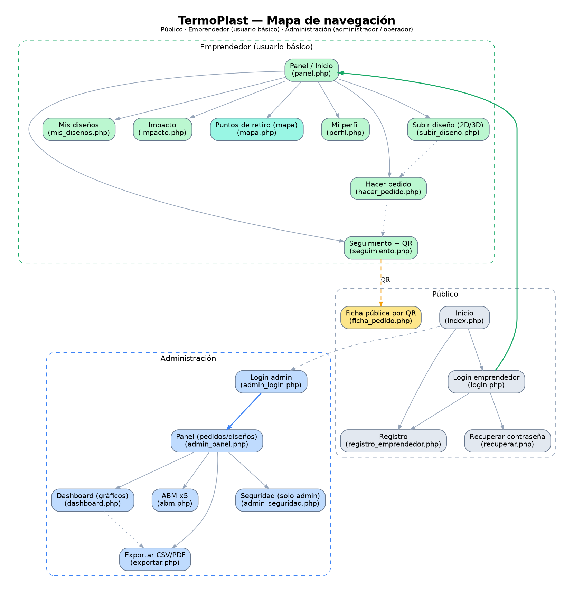

Interfaz y UX · requisito 9 · documento de apoyo para el prototipo
El sistema tiene 19 pantallas implementadas y funcionando (muy por encima del mínimo de 5), agrupadas en tres zonas según el rol: Público, Emprendedor (usuario básico) y Administración (administrador / operador). La navegación está definida y es consistente: cada zona tiene su barra de menú propia y el acceso se controla por rol.
| Pantalla | Archivo | Para qué sirve |
|---|---|---|
| Inicio | index.php | Landing del proyecto: propuesta de valor e ingreso. |
| Login emprendedor | auth/login.php | Acceso de usuarios básicos. |
| Registro | auth/registro_emprendedor.php | Alta de un nuevo emprendedor. |
| Recuperar contraseña | auth/recuperar.php · restablecer.php | Flujo "olvidé mi contraseña" (token de un solo uso). |
| Ficha pública por QR | pages/ficha_pedido.php | Estado de producción de un pedido al escanear su QR (sin login). |
| Pantalla | Archivo | Para qué sirve |
|---|---|---|
| Panel / Inicio | pages/panel.php | Vista principal con accesos a todo. |
| Hacer pedido | pages/hacer_pedido.php | Crear una orden a partir de un diseño aprobado. |
| Subir diseño (2D/3D) | pages/subir_diseno.php | Cargar SVG con previsualización 2D y 3D en vivo. |
| Seguimiento + QR | pages/seguimiento.php | Estado de pedidos, trazabilidad y QR por pedido. |
| Mis diseños | pages/mis_disenos.php | Listado de diseños y su estado de aprobación. |
| Impacto | pages/impacto.php | KPIs de impacto (kg reciclados, CO₂ evitado). |
| Puntos de retiro (mapa) | pages/mapa.php | Mapa Leaflet con los puntos de retiro. |
| Mi perfil | pages/perfil.php | Datos de la cuenta y 2FA. |
| Pantalla | Archivo | Para qué sirve | Rol |
|---|---|---|---|
| Login admin | admin/admin_login.php | Acceso al panel de control. | — |
| Panel | admin/admin_panel.php | Aprobar diseños y avanzar estados de pedidos. | Ambos |
| Dashboard | admin/dashboard.php | 4 KPIs + 4 gráficos (Chart.js). | Ambos |
| ABM (×5) | admin/abm.php | Materiales, Etiquetas, Puntos, Emprendedores, Usuarios. | Usuarios: solo admin |
| Exportar | admin/exportar.php | Descarga de listados en CSV y PDF. | Ambos |
| Seguridad | admin/admin_seguridad.php | Auditoría de eventos e intentos de login. | Solo admin |
